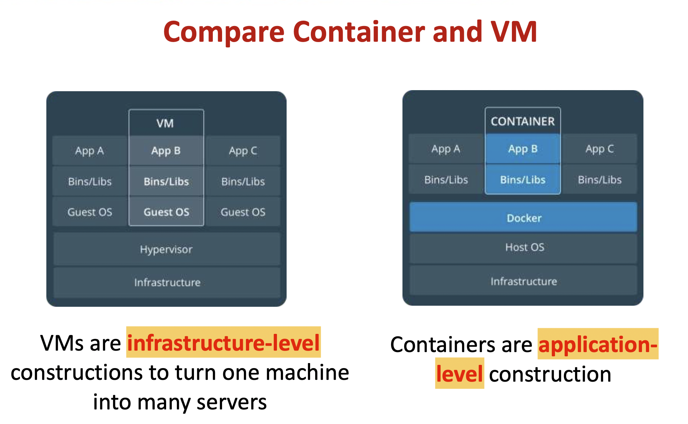
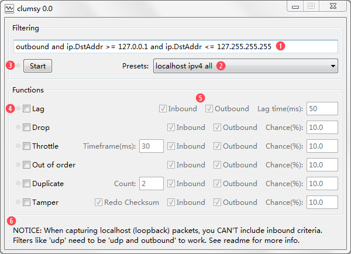

other¶
计算机网络¶
HTTPS 是 HTTP 外套 TLS/SSL ，协商的时候大体上是：客户端接收服务器公钥和签名，根据客户端上的 CA 证书来验证服务器可信(认证)，然后使用服务器公钥发送客户端的公钥和数据，服务器用服务器私钥解密再用客户端公钥加密数据返回，客户端用客户端私钥解密。 SSH 是 Secure Shell ，协商的时候大体上是：客户端接收服务器公钥，然后看本地是否记录过，未记录再提示用户验证是否可信(认证)，然后客户端生成对称秘钥，用 Diffie - Hellman 算法在不直接传输秘钥的情况下、以服务器公钥加密相关参数的形式然后服务器自己把这个对称秘钥算出来，然后双方通过这个临时对称秘钥加密通信。 总体来说只要验证身份阶段把好关、秘钥和算法足够强、私钥不泄露，两种方式都是十分安全的。 关于 SSH 端口，其实可以分开运维用端口和 Git 端口，一种简单方式是把 Git 服务部署在 Docker 等隔离环境中，内部配置 SSHD 仅允许 git 用户访问 git-shell ，需要运维则登录到宿主机再使用 Docker 的 exec 指令打开 shell 操作。SSH 不使用 22 端口，用户也可以在客户端配置 remote 的时候指定其他端口。 有的企业可能规定不允许记住登录状态，比如配置公钥自动登录这种就不符合要求，但其实可以打开两步验证，实际上现在等保会要求两种及以上验证方式同时使用。
SSH 没有 PKI 支持，需要额外的 host key 信任机制。大家 ssh 的时候有几个会注意 finger print 的？
数据加密解密体制¶
对称密钥密码体制¶
加密 Encrypt、解密 Decrypt 都用同一把钥匙
DES 数据加密标准
不对称密钥¶
加密密钥和解密密钥不是同一把
由 given public key 在计算上推断 private key 不可能
All public key、 encrypt algorithm，decrypt algorithm are open
RSA¶
- keys
id_rsa: private key ，需要保密id_rsa.pub: public key， 公开信息
具有保密的数字签名
Docker¶
传统虚拟机技术 是虚拟出一套硬件后，在其上运行一个完整操作系统，在该系统上再运行所需应用进程； Container 容器 内的应用进程直接运行于宿主的内核，容器内没有自己的内核，而且也没有进行硬件虚拟。因此容器要比传统虚拟机更为轻便。
{kind=link}
Ubuntu is a Linux distribution based on Debian and composed mostly of free and open-source software.
Concept¶
images, 镜像 就是原始的文件系统，为用户提供用户空间支持 container 容器 镜像运行的实体 repository 仓库 就是储存分发镜像
images 镜像¶
操作系统 分为 内核 和 用户空间。对于 Linux 而言，内核启动后，会挂载 root 文件系统为其提供用户空间支持相当于是一个 root 文件系统。
Docker 镜像 是一个特殊的文件系统，除了提供容器运行时所需的程序、库、资源、配置等文件外，还包含了一些为运行时准备的一些配置参数（如匿名卷、环境变量、用户等）。镜像 不包含 任何动态数据，其内容在构建之后也不会被改变。
docker images查看所有的 imagesdocker pull <images(repository)_name>docker pull ubuntu
Container¶
每一个容器运行时，是以镜像为基础层，在其上创建一个当前容器的存储层
镜像是静态的定义，容器是镜像运行时的实体。容器可以被创建、启动、停止、删除、暂停
repository¶
以 Ubuntu 镜像为例，ubuntu是仓库的名字，其内包含有不同的版本标签，如，16.0, 18.04。我们可以通过 ubuntu:16.04，或者 ubuntu:18.04来具体指定所需哪个版本的镜像。如果忽略了标签，比如 ubuntu，那将视为 ubuntu:latest。
使用images(repository)上的container
docker run --name <container_name> -it <images(repository)_name> /bin/bash创建image上的containerdocker run --name my_ubuntu -it ubuntu /bin/bash💡 每一次run都是create 完全新的container
exit退出containerdocker ps -a查看所有的containersdocker start <container_id> or <container_name>打开restartdocker attach <container_id> or <container_name>
字符 问题¶
字符的标识通常是指字符的编码方式，用于在计算机系统中表示和存储字符。最常见的字符编码标准是ASCII（American Standard Code for Information Interchange，美国信息交换标准代码），它使用7位或8位二进制数来表示字符，包括字母、数字、标点符号和控制字符。
除了ASCII之外，还有其他的字符编码标准，例如Unicode（统一码、国际码），它是一种用于表示世界上几乎所有字符的字符集标准。Unicode使用不同的编码方案，如UTF-8、UTF-16和UTF-32，其中UTF-8是最常用的编码方案，可以用来表示几乎所有的字符。
字符的具体表述是指字符在具体编码标准下的表示方式。例如，在ASCII编码中，字符’A’的标识是65，字符’a’的标识是97。在UTF-8编码中，字符’A’的标识是0x41，字符’a’的标识是0x61。具体的表述方式取决于所使用的字符编码标准。
字符集标准 ，定义了字符集，表示世界上几乎所有的字符，定义了每个字符的唯一编码点。 字符编码方案 ，一般基于一个字符集标准，对字符进行编码，使得在**存储和传输文本数据**时节省空间和带宽。也就是将内存存入硬盘的格式
notes
内存固定使用 <kbd>unicode</kbd> 完整, 我们改变的是从<u>内存存入硬盘的格式</u>
linux 默认 utf-8， windows 默认 gbk
文本存取乱码问题
存乱了，编码格式应该设置成支持文本内字符串的格式。日文就不要用 <kbd>gbk</kbd>
取乱了，编码格式应该对应该文件存入硬盘的格式
Unicode 是一种 字符集标准。Unicode，通常用 十六进制数 表示。但也可以用不同的表示形式表示，如十进制
‘A’ = 十六进制 U+0041 = 十进制 65
基于 Unicode 的, * ：表示不支持
字符 |
Unicode 码位 |
ASCII |
gbk |
shift-jis |
utf-8 |
|---|---|---|---|---|---|
A |
U+0041 |
41 |
41 |
41 |
41 |
啊 |
21834 |
b’xb0xa1’ |
* |
b’xe5x95x8a’ |
- UTF-8 Unicode Transformation Format-8 是一种基于 Unicode的字符编码方案。它使用可变长度的编码方式，可以表示Unicode字符集中的所有字符。
- 特点： 兼容ASCII编码 ，即ASCII字符的UTF-8编码与ASCII编码完全一致，不会引入额外的字节。对于非ASCII字符，UTF-8使用多字节表示，根据字符的Unicode编码点范围，将字符编码为1到4个字节。优势：它既可以表示Unicode字符集中的所有字符，又能够高效地处理ASCII字符，使得在存储和传输文本数据时节省空间和带宽。因此，UTF-8成为了互联网上使用最广泛的字符编码方案。
总结: UTF-8 是基于 Unicode 的一种字符编码方案，用于表示 Unicode 字符集中的字符，并且兼容 ASCII 编码。
gbk
‘A 被编码成一个字节，所以可以直接显示 b’A’ == b’x41’.
>>> 'A'.encode('utf8')
b'A'
>>> b'A' == b'\x41'
True
>>> A' == b'A'
False
>>> b'\x41'.decode('utf8')
'A'
>>> unicode_A = ord('A')
unicode_A=65
>>> chr(unicode_A)
'A'
clumsy¶
功能
重现网络异常造成的程序错误
评估应用程序在不良网络状况下的表现”
当clumsy被激活时，只有符合这些标准的网络数据会被进行处理，而你不需要的数据仍然会由系统正常传输。
使用¶
自定义filter，正确的 WinDivert 规则
如果有预设的filter 可以自定义 see: #self-define-presets
<kbd>Start</kbd>。
选择<kbd>Fuctions</kbd>，对应指标前面出现绿点，表示该项拦截生效
- 修改params
- 
- 通过 ping 网络，查看工具模拟网络是否生效

Self-define <kbd>presets</kbd>¶
软件根目录下的<kbd>config.txt</kbd>以<u>键值对</u>的形式填写自己的配置
添加一个 起始和目标端口为10003，10004的udp连接 配置
# you can add your usual filters here for your own use:
#http requests ONLY(data transmit on other ports): outbound and tcp.DstPort == 80
NKGMoba: udp and (udp.DstPort == 10003 or udp.DstPort == 10004) \
or (udp.SrcPort == 10003 or udp.SrcPort == 10004)
Functions¶
Lag, 延迟，把数据包缓存一段时间后再发出，这样能够模拟网络延迟的状况。
Drop, 掉包，随机丢弃一些数据。
Throttle, 节流，把一小段时间内的数据拦截下来后再在之后的同一时间一同发出去。
Duplicate, 重发，随机复制一些数据并与其本身一同发送。
Out of order, 乱序，打乱数据包发送的顺序。
Tamper, 篡改，随机修改小部分的包裹内容。
- Bandwidth, ，小带宽
统计包大小时用的是整个 IP 包的大小（包括各种协议头），所以你设置成 500 KB/s 的话，实际按 tcp 计算的下载速率会<u>略小</u>。
params
Inbound/Outbound: 是否处理输入/输出数据包。这里在 filter 的控制之外额外提供一个选择的机会，并且也可以在实时生效。
Chance: 功能生效的概率。显然你需要把它们设置在一个合理的范围内才不会让网络在可以接受的范围内劣化。
Postman¶
传参¶
meth |
|
环境变量 |
|
|---|---|---|---|
加在哪 |
url 末尾 |
可以插到url中 |
可以插到url中 |
参数需要现跑 |
❌ |
✅ |
❌ |
{kind=link}
{kind=link}
{kind=link}
Errors¶
Error: Maximum response size reached:Filein navigation bar -》Settings-》Max response size in MB改大一点
进程 & 线程¶
进程 是是系统进行资源分配和调度的基本单位。 ==== 是操作系统能够进行运算调度的最小单位，
一个进程至少有一个线程，一个进程可以运行多个线程，这些线程共享同一块内存，线程之间可以共享对象、资源，如果有冲突或需要协同，还可以随时沟通以解决冲突或保持同步
并不是线程越多，进程的工作效率越高.
在一个进程内, 不管你创建了多少线程, 它们总是被限定在一颗CPU内, 或者多核CPU的一个核内.
多线程在宏观上是并行的，在微观上则是分时切换串行的，多线程编程无法充分发挥多核计算资源的优势
区别：
进程 |
线程 thread |
|
|---|---|---|
本质区别 |
对正在运行中的程序的一个抽象. 操作系统资源分配和调度 的基本单位 |
任务调度和执行 的基本单位 其是进程中的一个执行任务（控制单元），负责当前进程中程序的执行 |
开销 |
每个进程都有 独立的代码和数据空间（程序上下文） 程序之间的切换会有 较大的开销 |
同一类线程共享代码和数据空间，每个线程都有自己 独立的运行栈和程序计数器 PC 线程之间切换会有 较小的开销 |
所处环境 |
在操作系统中能同时运行多个进程（程序） 本地计算机中 CPU 的数量 |
在同一个进程（程序）中有多个线程同时执行（通过CPU调度，在每个时间片中只有一个线程执行） |
内存分配 |
系统在运行的时候会为每个进程分配不同的内存空间 |
线程而言，除了CPU外，系统不会为线程分配内存（线程所使用的资源来自其所属进程的资源），线程组之间只能共享资源 |
包含关系 |
没有线程的进程可以看做是单线程的，如果一个进程内有多个线程，则执行过程不是一条线的，而是多条线（线程）共同完成的； |
线程是进程的一部分，所以线程也被称为 轻权进程或者轻量级进程 |
Example: 进程=火车，线程=车厢
线程在进程下行进（单纯的车厢无法运行）
一个进程可以包含多个线程（一辆火车可以有多个车厢）
不同进程间数据很难共享（一辆火车上的乘客很难换到另外一辆火车，比如站点换乘）
同一进程下不同线程间数据很易共享（A车厢换到B车厢很容易）
进程要比线程消耗更多的计算机资源（采用多列火车相比多个车厢更耗资源）
进程间不会相互影响，一个线程挂掉将导致整个进程挂掉（一列火车不会影响到另外一列火车，但是如果一列火车上中间的一节车厢着火了，将影响到所有车厢）
- def square_args(func):
- def inner(a, b):
return func(a*2, b*2)
return inner
@square_args def multiply(a, b):
return a*b
multiply(3, 9)
inner(multiply(3, 9))